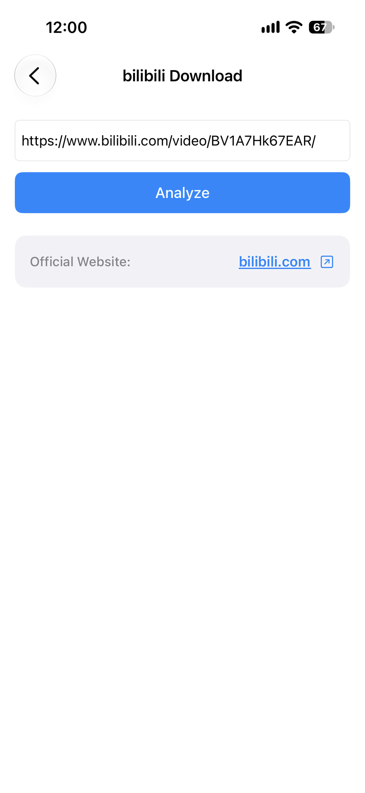
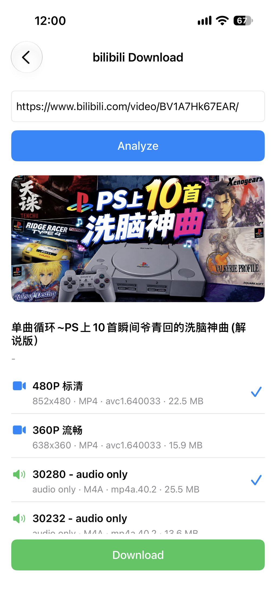

How to Download bilibili Videos
bilibili is home to anime episodes, creator uploads, tutorials and live highlights worth keeping. ImageGet makes saving them simple. Paste a video link, and the app analyzes it and lets you download it straight to your photo library — no screen recording, no third-party tools. Here's how to download bilibili videos, step by step.
Download ImageGet free — save bilibili videos in one tap.
Download ImageGetStep 1: Open ImageGet and tap Video Download
Open ImageGet. On the main screen, tap Video Download — that's where the app keeps its video tools.

Step 2: Choose bilibili Download
Then tap bilibili Download. ImageGet switches into bilibili mode and waits for your link — so you get the video itself, not just a thumbnail or a page preview.

Step 3: Copy the video link
Open the bilibili app or website and find the video you want to keep. Use the share option to copy the link, or on a desktop browser just copy the URL from the address bar. A standard video link looks like bilibili.com/video/BV….

Step 4: Paste it into ImageGet
Paste the video link into ImageGet. The app analyzes it automatically — no searching, no waiting around. In a moment, ImageGet shows you the video, ready to download.

Step 5: Download the video
Tap Download and, if more than one version is available, pick the quality you want. The video saves to your photo library, so you can rewatch it anytime — even offline, without opening bilibili.
Tips for downloading bilibili videos
- Free downloads — the free plan gives you 3 video downloads; upgrade to Premium for unlimited downloads and an ad-free experience.
- Pick your quality — if bilibili offers more than one version, ImageGet lists them so you can balance picture quality against storage.
- No screen recording — ImageGet downloads the video directly, so there's no quality loss from re-recording.
- Standard video links work — a URL like bilibili.com/video/BV… pastes straight in.
FAQ
Can I download bilibili videos for free?
Yes — the free plan includes 3 video downloads. Upgrade to Premium for unlimited downloads and an ad-free experience.
Do I need to screen-record to save a bilibili video?
No. ImageGet downloads the video directly — no screen recording needed.
Can I watch a saved bilibili video offline?
Yes — the video saves to your photo library, so you can rewatch it anytime without opening bilibili.
See it. Save it. Simple.
Download ImageGet free and save bilibili videos in one tap.
Download ImageGet